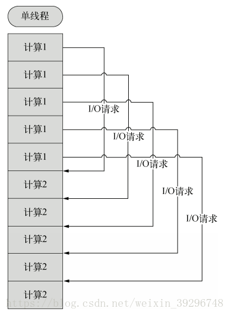
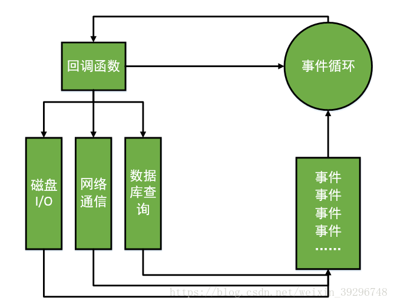

Node.js单线程、非阻塞I/O、事件驱动三大特点的理解
时间：2020-3-8
摘要：Node.js自身哲学，是花最小的硬件成本，追求更高的并发，更高的处理性能。为了实现这个目标追求，Node.js的创建者Ryan Dahl鬼才般的使用单线程、非阻塞I/O（non-blocking I/O）、事件驱动这三个方法。这三个方法相辅相成，缺一不可，共同致力于提高web服务器的性能，不能分割开来进行理解。
Node.js让JavaScript运行在服务器端的开发平台，它让JavaScript的触角伸到了服务器端，可以与PHP、JSP、Python、Ruby平起平坐。
但Node似乎有点不同：
* Node.js不是一种独立的语言，与PHP、JSP、Python、Perl、Ruby的“既是语言，也是平台”不同，Node.js的使用JavaScript进行编程，运行在JavaScript引擎上（V8）。
* 与PHP、JSP等相比，Node.js跳过了Apache、Naginx、IIS等HTTP服务器，它自己不用建设在任何服务器软件之上。Node.js的许多设计理念与经典架构（LAMP）有着很大的不同，可以提供强大的伸缩能力。
Node.js自身哲学，是花最小的硬件成本，追求更高的并发，更高的处理性能。为了实现这个目标追求，Node.js的创建者Ryan Dahl鬼才般的使用单线程、非阻塞I/O（non-blocking I/O）、事件驱动这三个方法。这三个方法相辅相成，缺一不可，共同致力于提高web服务器的性能，不能分割开来进行理解。下面先开始逐一介绍这三个特点，最后再综合到一起理解。
一、单线程
在Java、PHP或者.net等服务器端语言中，会为每一个客户端连接创建一个新的线程。而每个线程需要耗费大约2MB内存。也就是说，理论上，一个8GB内存的服务器可以同时连接的最大用户数为4000个左右。要让Web应用程序支持更多的用户，就需要增加服务器的数量，而Web应用程序的硬件成本当然就上升了。
Node.js不为每个客户连接创建一个新的线程，而仅仅使用一个线程。当有用户连接了，就触发一个内部事件，通过非阻塞I/O、事件驱动机制，让Node.js程序宏观上也是并行的（这个会在后面事件驱动机制中解释。图1.1与图1.2的对比其实也能看出一点端倪）。使用Node.js，一个8GB内存的服务器，可以同时处理超过4万用户的连接。
我们再来看一下多线程与Node.js中单线程的区别：
可以通过图1.1与图1.2看出Node.js中单线程的好处是CPU的利用率永远是100%。什么意思呢？我们假设有图1.1中的五个并发业务。一个CPU平均分配给五个业务。其中每一个业务都是先计算再I/O再计算。所谓的I/O你可以简单的理解为读取数据。那么进行I/O的时候，分配给这个线程的CPU是不工作的，得等到I/O结束继续进行计算2 CPU才又开始工作，所以这一段进行I/O的时间段，这一段线程被白白的阻塞掉了。但是在单线程的工作机制中就不一样。在进行完业务一的计算1之后，遇见I/O操作，那么CPU便马上调取业务二的计算1，依此类推，等到I/O操作结束之后再马上调取业务一的计算二。所以，在单线程中，CPU的利用率永远处于100%。
另外，单线程的带来的好处，还有操作系统完全不再有线程创建、销毁的时间开销。
当然，单线程也是有坏处的。就是当一个用户造成了线程的崩溃，那么整个服务都会崩溃，其他人也就都崩溃了。但是多线程机制不会，一个线程的崩溃不会影响到其他线程。
二、非阻塞I/O （non-blocking I/O）
当在访问数据库取得数据的时候，需要一段时间。在传统的单线程处理机制中，在执行了访问数据库代码之后，整个线程都将暂停下来，等待数据库返回结果，才能执行后面的代码。也就是说，I/O阻塞了代码的执行，极大地降低了程序的执行效率。
由于Node.js中采用了非阻塞型I/O机制，也就是在图1.1与图1.2的对比中提到的当进行I/O操作的时候，将调取后面其他业务的计算，直至I/O完成，然后再进行原来业务I/O操作后的后续计算。具体到代码而言就是，在执行了访问数据库的代码之后，将立即转而执行其后面的代码，把数据库返回结果的处理代码放在回调函数中（当某个I/O执行完毕时，将以事件的形式通知执行I/O操作的线程，线程执行这个事件的回调函数。为了处理异步I/O，线程必须有事件循环驱动机制，不断的检查有没有未处理的事件，依次予以处理。），从而提高了程序的执行效率。
阻塞模式下，一个线程只能处理一项任务，要想提高吞吐量必须通过多线程。而非阻塞模式下，一个线程永远在执行计算操作，这个线程的CPU核心利用率永远是100%。所以，这是一种特别有哲理的解决方案：与其人多，但是好多人闲着；还不如一个人玩命，往死里干活儿。
三、事件驱动（event-driven）
这个特点其实在图1.1与图1.2的对比中已经提到了。试想，假如非阻塞I/O没有用到事件驱动这个机制。那么，这么多业务中事件的调用肯定会乱了套。比如这个业务的I/O事件完成了，但是，在这段时间里，已经有很多业务进入了线程的队列进行处理，那么完成这I/O之后CPU是该终止正在进行的就算转而进行这项业务后续的计算还是让这项业务进行等待？这些都会在事件驱动的事件环机制中得到解答。
在Node中，客户端请求建立连接，提交数据等行为，会触发相应的事件。在Node中，在一个时刻，只能执行一个事件回调函数，但是在执行一个事件回调函数的中途，可以转而处理其他事件（比如，又有新用户连接了），然后返回继续执行原事件的回调函数，这种处理机制，称为“事件环”机制。来理解下面这幅图（对于这幅图的理解非常重要，能理解它，那么这三个特点你也就理解了）：
我们这样来举例子：
首先，小明同学点击了网页，那么它进入图上事件循环那个圆圈中，小明同学的这次业务事件没有相关的I/O操作。这时候执行它的回调函数。完毕之后回到直接回到事件循环。等待下一次的事件到来。
这时候小红同学也触发了一个事件，比如下载图片。这时候，在进行回调函数之前，会有相应的I/O操作。这时候，CPU不会死等I/O完成，而是将小红这个事件放进图片上右下角方框中的事件队列中，同时从中调取比如小强触发的事件。如果小强的事件又包含比如数据库查询等操作，那么CPU又会把它放入队列。而这时，如果小红的I/O操作完成了，那么就会从中调取小红的事件继续进行。这就是事件环的机制。当然，整个触发的事件是有优先级的，在小红进行I/O操作的时候，将其放进队列不是简单的放在最后，Node.js中有相应的机制保证当小红的I/O操作完成之后，下一个CPU处理的事件就是小红的事件，而不是从队列中再去调取一个新的事件。
这样可以看出，虽然微观上，事件处理确实是一件一件来进行的，在处理一个事件的时候，不能进行其他事件的处理。但是宏观上来说，看起来就像是所有事件在同时进行处理。
四、对于这三个特点的形象理解
我常常将Node.js比作一个抠门的餐厅老板，它只聘请了一个服务员（单线程），但是服务的效率却比聘请多个服务员（多线程）的效果要好。这是因为它有自己的一套机制（非阻塞I/O、事件驱动）去保证服务的正常进行。我们可以想象一下。在一个餐厅中先后来了多个客人。服务员先把菜单给先来的客人让他们点菜（I/O操作），然后自己去另一桌稍后来的客人那再把菜单给他让他点菜。此时，如果，第一桌的客人点好了，那么他又会回到第一桌去记录点的菜给厨房。这就是Node.js特点的形象理解。
这三个特点是互相依存的，不可分离的。先是单线程，单线程的好处是减少了内存开销与操作系统的内存换页。但是如果某一个事情进入了，却被I/O阻塞了，那这个线程就阻塞了。所以就会有非阻塞I/O的出现。CPU不会傻等I/O语句结束，而会执行后面的语句。但是非阻塞就能解决问题了么？比如执行着小红的业务，执行过程中，小刚的I/O回调完成了，此时怎么办？这样就有了事件驱动机制的出现。不管是新用户的请求，还是老用户的I/O完成，都将以事件方式加入事件环，等待调度。